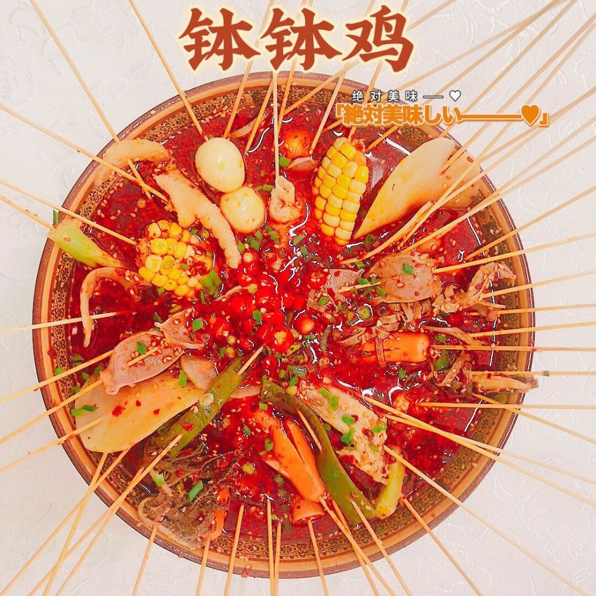
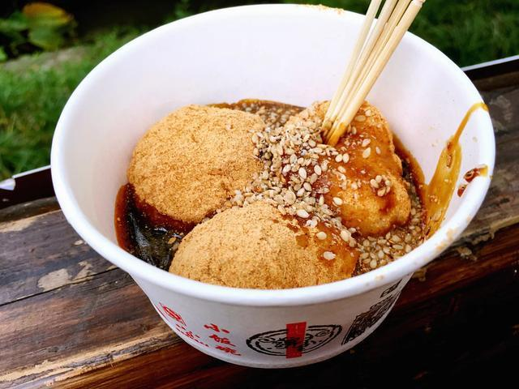
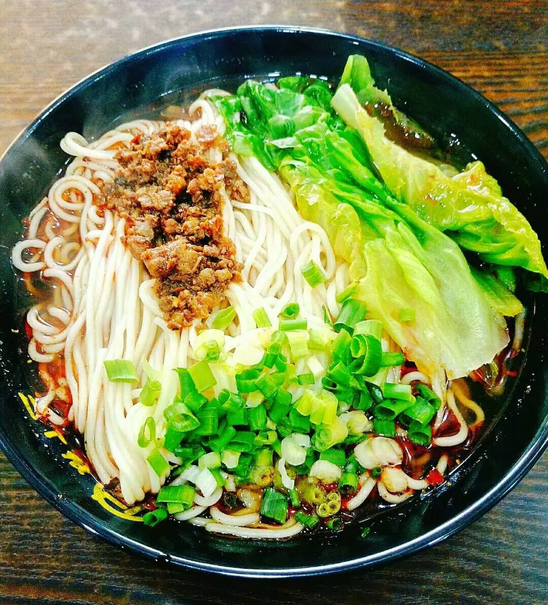
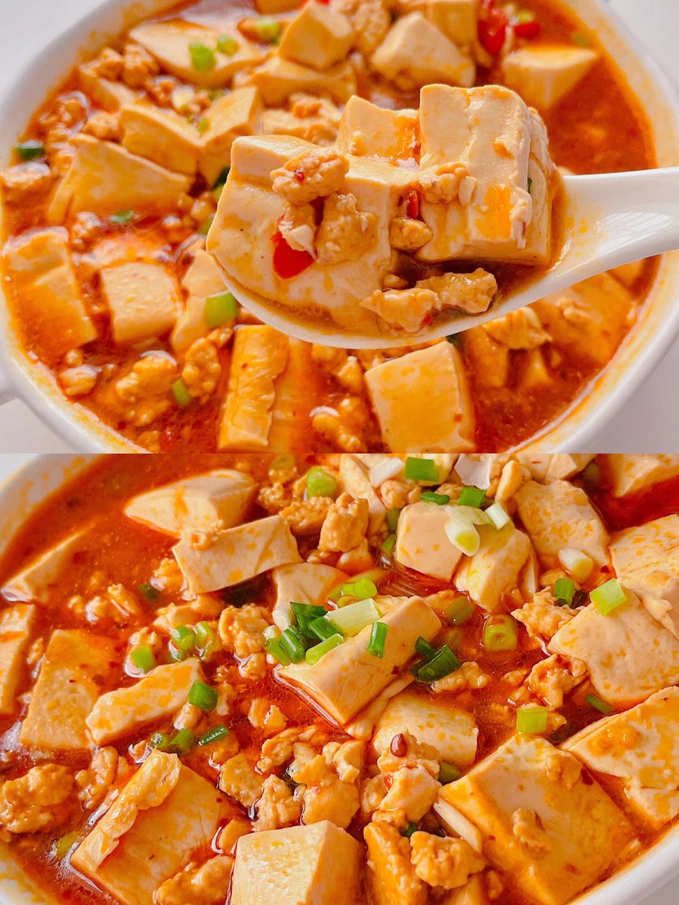

[*四川美食*]
川菜是中国汉族传统的四大菜系之一、中国八大菜系之一。川菜有着本土川菜与海派川菜之分，本土川菜中，四川菜系又包括川味菜肴、面点小吃、火锅等。
回锅肉
回锅肉是四川传统菜式， 属于川菜系。制作原料主要有猪肉、青椒、蒜苗等，口味独特，色泽红亮,肥而不腻，入口浓,回锅肉一直被认为是川菜之首，川菜之化身，提到川菜必然想到回锅肉。它色香味俱全，颜色养眼，是下饭菜之首选。 川传统菜式川传统菜式川传统菜式川传统菜式川传统菜式

钵钵鸡
钵钵鸡是一种四川乐山和成都的传统名小吃， 起源于乐山,从清代流传至今已有上百年的历史, 钵钵鸡是以陶器钵盛放配以麻辣为主的佐料，加上多种调料的去骨鸡片拌和而成。有皮脆肉嫩，麻辣鲜香，甜咸适中的特色。吃奶汤面时配以钵钵鸡，别具风格
三大炮
主要食材糯米、红糖、芝麻、黄豆等，在抛扔糯米团时，如弹丸一样，发出“当、当、当”的响声，分为“铁炮”“火炮”“枪炮”，故名“三大炮”,从热锅盆中抓出一大坨糍粑分为三个，然后摔向案板，裹上装有芝麻粉、黄豆粉，然后浇上红糖、芝麻等。
夫妻肺片
原名“夫妻废片”，但并不用肺。属于川菜系,四川汉族特色小吃，以牛头皮、牛心、牛舌、牛肚、牛肉为料，注重选料，制作精细，调味考究。夫妻肺片片大而薄，粑糯入味，麻辣鲜香，细嫩化渣。深受群众喜爱

担担面
担担面是四川成都和自贡著名的地方传统面食小吃，据说源于挑夫们在街头挑着担担卖面，因而得名。 担担面是将面粉擀制成面条煮熟，舀上炒制的肉末而成。成菜面条细薄，卤汁酥香，咸鲜微辣，香气扑鼻，十分入味
麻婆豆腐
麻婆豆腐，四川省传统名菜之一、材料主要有豆腐、牛肉末(也可以用猪肉)、辣椒和花椒等。麻来自花椒，辣来自辣椒，这道菜突出了川菜“麻辣”的特点。期味独特，口感顺滑，麻辣鲜香，超级下饭。
